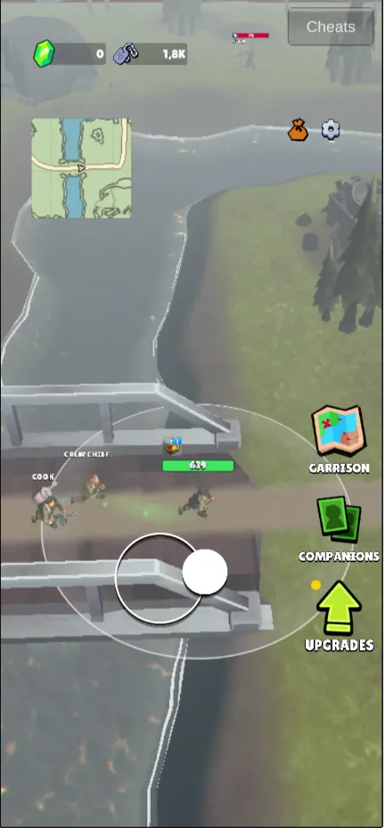
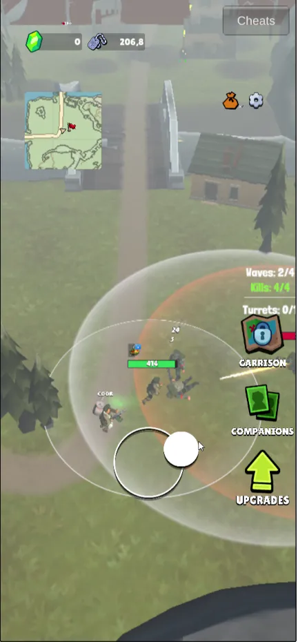
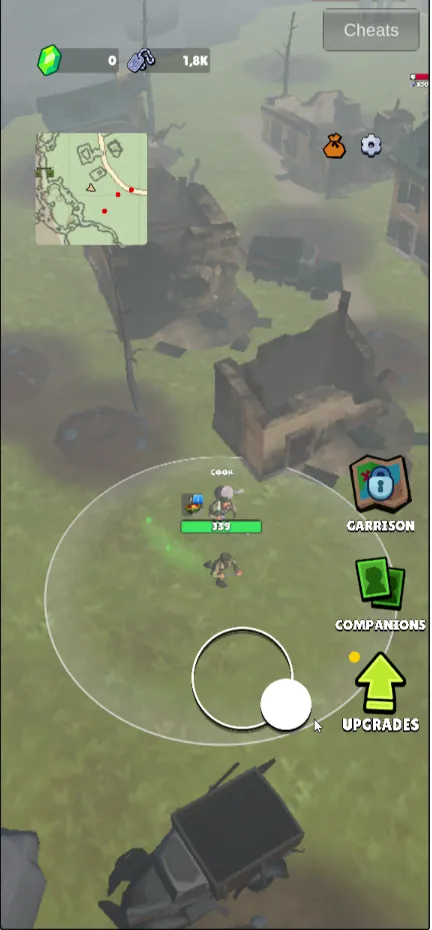
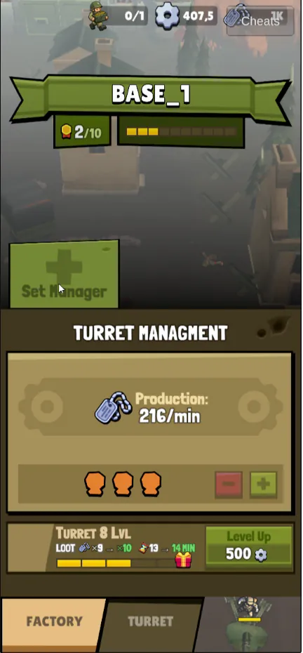
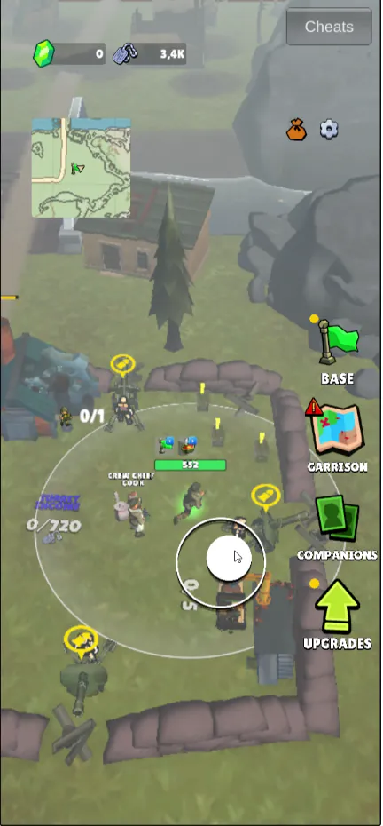
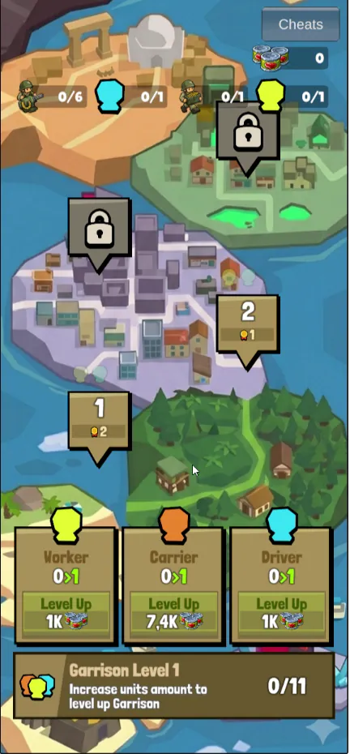
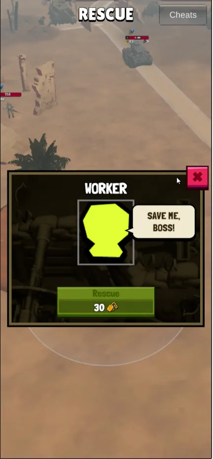
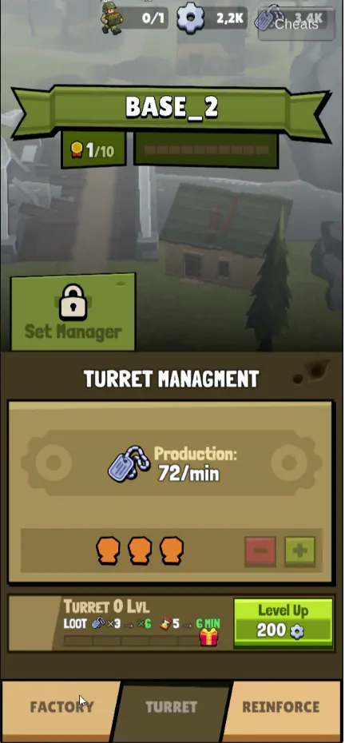
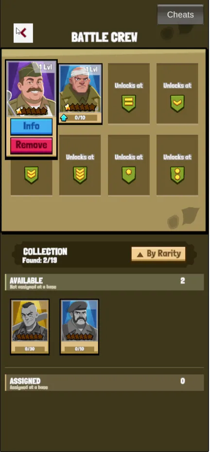
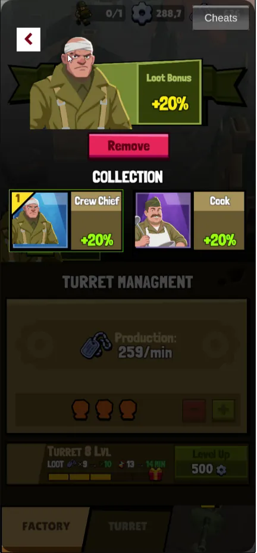

Десять экранов: сейчас и после правки
Слева — кадр из записи, справа — тот же экран с предложенной правкой. Макеты нарисованы поверх настоящих кадров, чтобы было видно, где именно что меняется. Тексты на английском, как в текущей версии игры.
- 1что мешает сейчас
- Aчто меняем
Одна цель на экране
Самая частая проблема записи: игрок не знает, куда идти. Виджет цели отвечает на это сразу — что сделать, где и что за это будет.

1 2 3Что мешает сейчас
- 1Цели нет нигдеНи в HUD, ни в мире. Шесть раз за сессию игрок говорит, что не знает, куда идти дальше.
- 2Карта не отличает своё от чужогоНет границы территории, цели и точки возвращения.
- 3Открытый путь не подписанМост ведёт к следующей базе, но об этом знает только тот, кто уже прошёл.
Что меняем
- AВиджет целиГлагол, объект, прогресс и что откроется. Одна цель за раз; меняется сама по состоянию игры.
- BКарта как штабнаяСвоё — зелёным, чужое — красной штриховкой, цель — жёлтым ромбом, дом — точка возвращения.
- CМаркер и путь на землеПунктир от героя к цели; исчезает, когда цель достигнута.
- DСтрелка у краяПоявляется, только если цель за кадром.
Опора в коде: маркеры точек и ворот уже есть (Minimap.cs:28–32, 320–327). Сценарий целей нужно написать: в GD-сцене массивы задач пустые.
Захват как договор
Игрок должен знать условия победы до боя. Тогда новая волна — ожидаемый этап, а не обман.

1 2 3Что мешает сейчас
- 1Условия мелко и в миреWaves / Kills / Turrets висят над точкой и теряются среди объектов.
- 2Опасная зона без источникаКрасный круг есть, а кто его создаёт и как отключить — нет.
- 3Победа обманываетНа базе 2 защитники — это только волна 1 из N; следующая выходит через 2 с, без предупреждения.
Что меняем
- AПолоса захвата, как у боссаВсе волны видны заранее; текущая подсвечена. Это вариант, который предложили на встрече.
- BПауза с отсчётом«Волна 2 зачищена, следующая через 4 с» — проверить 4 с вместо нынешних 2.
- CИсточник бафа названЧип в полосе и линия от источника к усиленным врагам; после разрушения — «−50%».
- DПравило сброса — до потериОдна строка, пока игрок в круге.
Balance.cs:1604–1620: для base_2 режим DefendersAsFirstWave, GetWaveDelay = 2 с.
Снайпер предупреждает до выстрела
Сейчас урон приходит из-за края экрана. С телеграфом попадание становится честным, а уклонение — умением. Анимация показывает предложенный ритм.

1 2Что мешает сейчас
- 1Урон без источникаЗдоровье падает, а стрелка не видно. Участники: «снайпер сверху сносит».
- 2Стрелок за краемНет метки направления — нечего обходить.
Что меняем
- AМетка у краяПоявляется, как только снайпер заметил героя.
- BЛазер 1,2 сПрицеливание видно на земле — есть время уйти.
- CФиксация 0,25 сКольцо сжимается перед выстрелом. Оба числа — стартовые значения для проверки на скорости ×1.
Окно базы: выпуск отдельно от добычи
В окне турели написано Production: 216/min — так же, как у шахты. Поэтому игрок принимает турель за ещё одну шахту. В новом окне у каждого источника свой блок, своя причина и своя кнопка.

1 2 3 4Что мешает сейчас
- 1У турели «Production»Расчётный доход обороны подписан как выпуск шахты — игрок читает его как постоянное производство.
- 2«TURRET MANAGMENT»Опечатка в заголовке; то же в окне завода.
- 3Добыча и время в одной строкеLOOT ×9 → ×10 и 13 → 14 MIN без подписи, что это и почему выросло.
- 4«2/10» без путиНепонятно, что поднимет уровень базы.
Что меняем
- AЗавод — постоянный выпускСкорость, из чего она сложилась, склад и кнопка сбора.
- BОборона — время и добычаСколько ещё стреляют турели и что принесла последняя атака.
- CПуть к уровню 3Сколько улучшений осталось в каждой категории.
- DБонус с адресом«+20% этого завода»: видно, где работает менеджер, а общий бонус ассистента подписан отдельно.
- EУлучшение: было → сталоПо строке на параметр — так игрок поймёт, почему оборона стала держаться 10 минут вместо 5.
Числа в макете — для примера, кроме правил из кода: множитель рабочих, уровень базы после 5 улучшений завода и 5 турелей. Тексты Turret MANAGMENT и Factory Managment — в префабах Turret Base Panel и Mine Base Panel.
Тревога называет причину
Сейчас красный знак горит по одному условию — у построенных турелей меньше 30 с стрельбы. У недостроенной базы патронов ещё нет, и знак выглядит как авария. Участник прямо назвал это багом. Четыре состояния — четыре разных сообщения с действием.

1 2 3Что мешает сейчас
- 1Знак без причиныСрабатывает при запасе стрельбы ≤ 30 с, а в коде этот сигнал записан в поле underAttack.
- 2На базе ничего не изменилосьИгрок приходит — разрушений нет, атаки нет. Он перестаёт верить уведомлениям.
- 3Счётчики без подписи«0/1» и «0/720» над базой — неясно, чего не хватает.
Что меняем
- AСообщение = база + причина + действиеПереключите состояния под телефоном: у каждого свой цвет, значок, текст и кнопка. Цвет никогда не единственный признак.
- BЗначок на кнопке — того же состоянияГаснет, когда причина устранена.
BaseSiegeWarning.cs:64–76; BaseWidget.cs:140–142.
Гарнизон: где люди и что изменит перевод
«Почему у меня ноль из одного?» — единственный рабочий занят на первой базе, а экран этого не говорит. Люди — главная развилка экономики, её нужно показывать как выбор.

1 и кнопка Level Up" loading="lazy"> 1 2 3Что мешает сейчас
- 1«0/1» читается двоякоСвободно ноль из одного или нанято ноль? Игрок решает, что игра сломалась.
- 2Главная кнопка — купить ещёLevel Up за 1K, а найти и перевести своего человека нельзя.
- 3На карте людей не видноНеясно, на какой базе кто работает и где производство стоит.
Что меняем
- AВсего, свободно, занят — и гдеКаждый человек с базой и тем, что он сейчас даёт.
- BПредпросмотр переводаЧто изменится на обеих базах — до подтверждения. Единственный рабочий — это весь выпуск завода, поэтому «72 → 0», а не «−1».
- CСостояние баз на картеГде работают, где стоит производство без людей.
WorkersModule.cs:56 — первый рабочий ×1, каждый следующий +0,5. Топливо 10/мин — для примера.
Цена: сколько есть, сколько нужно, где взять
«Сейв ми, босс. Воркер. Но у меня такого нет, извини. Не знаю, где взять». Цена без запаса и источника — тупик. Предложение писать запас через дробь поддержали на встрече.

1 2Что мешает сейчас
- 1«30» без запасаСколько у меня и сколько не хватает — нужно искать в другом окне.
- 2Неясно, зачем он нуженОкно не говорит, что даст спасённый (N4: «Без понятия, почему он нужен»).
Что меняем
- AПольза одной строкойЧто откроет спасение.
- B«Есть / нужно» на кнопкеНедостающее — красным. Так же для всех цен в игре: подкрепление, улучшения, ранговые прокачки.
- C«Где взять» рядом с ценойВедёт к настоящему источнику валюты, а не в магазин.
Цена спасения задаётся в точке на сцене (по умолчанию 50 Gold, ResourceRescuePoint.cs:37). Числа 12 и 18 — для примера.
Подкрепление: условие, запас, выбор водителей
Вкладка REINFORCE видна в окне базы 2 до постройки здания подкрепления. Внутри панели игрок не видит, хватает ли топлива, сколько ждать и что выгоднее — один водитель или два.

1 2 3Что мешает сейчас
- 1Вкладка до постройкиПодкрепление видно и, по словам участника, запускается без здания.
- 2Замок без условияSet Manager закрыт, но не сказано, что его откроет.
- 3Опечатка MANAGMENTТа же, что в окне турели базы 1.
Что меняем
- AЗапас топлива с недостачейИ переход к источнику.
- BВыбор водителей как выборВторой водитель даёт в 1,5 раза больше опыта за вдвое большую цену, время рейса то же.
- CОчередь и награда названыСколько ждать и что даст каждый пятый рейс.
- DПодкрепление — с условиемДо постройки вкладка показывает «Постройте здание подкрепления — 200 Fuel» с кнопкой, а не панель запуска.
Balance.cs:2145 — слотов водителей столько, каков уровень базы (максимум 5); 2184–2213 — 250 Fuel × 2^(водители − 1), 20 XP × 1,5^(водители − 1), рейс 300 с; каждый пятый рейс вместо опыта даёт 20 именных звёзд помощников базы (2160–2178; ReinforceModule.cs:172–174); 1566, 1578 — здание стоит 200 Fuel. ReinforceModule.cs:152–180 — запуск проверяет постройку.
Помощник: получить, поставить, убрать
Спасённый повар «исчез» с карты, а уведомление не объяснило, кто это и где он, — ценность первой награды потерялась. Нужна карточка с ролью и одной кнопкой, а убирать из отряда — тем же жестом, что и добавлять.

1 2 3Что мешает сейчас
- 1Убрать — маленькая кнопка под портретомRemove пришлось объяснять голосом.
- 2Слот закрыт значком званияБез текста, какое звание нужно и как его получить.
- 3«Отряд» и «на базе» — два списка без объясненияAvailable / Not assigned at a base читается как техническая строка.
Что меняем
- AКарточка спасенияПортрет, роль одной строкой и что он делает.
- BОдна главная кнопка«В отряд» сразу; если слоты заняты — выбор, кого заменить.
- CКрестик в углу слотаКак предложили на встрече; после снятия — «вернулся в коллекцию».
Портрет повара взят из кадра 57:40. Повар нравится игрокам (лечение заметно) — карточка должна это усилить, а не заменить.
«Назад» работает с первого нажатия
Единственный блокер P0. В окне менеджера кнопка «Назад» срабатывает только верхним левым углом — игрок застревает.

1 2Что мешает сейчас
- 1Работает только уголКрасный квадрат — та часть, на которую советовали нажимать на встрече.
- 2Что-то перекрывает кнопкуВероятный кандидат — портрет и плашка менеджера рядом с кнопкой; проверить raycastTarget и порядок слоёв.
Что меняем
- AВся кнопка плюс поляНажимаемая зона не меньше 44 pt — около 120×120 единиц канваса окна (1080×2338). Декор рядом не ловит нажатия. Системная «Назад» на Android закрывает верхнее окно.
В UI-патче cadc0c1 есть IBackHandler и UiSafeArea — основа для единого «Назад» уже есть; проверить на итоговой сцене и телефоне.
Шесть правил для всех экранов
Вывод из десяти разборов: их стоит закрепить в гайде интерфейса, чтобы новые окна не повторяли старые ошибки.
- Одна цель на экране. Глагол, объект, прогресс, награда; стрелка, если цель за кадром.
- Над объектом одна подпись. Действие или прогресс; подробности по тапу.
- У каждого нуля — причина и кнопка. «Нет рабочего [Назначить]», а не «0».
- У каждой цены — «есть / нужно» и «Где взять». Недостающее — красным.
- Было → стало по строке на параметр. Особенно у улучшений и переводов людей.
- Нажимаемая зона от 44 pt, состояние — не только цветом. Значок и текст дублируют цвет.